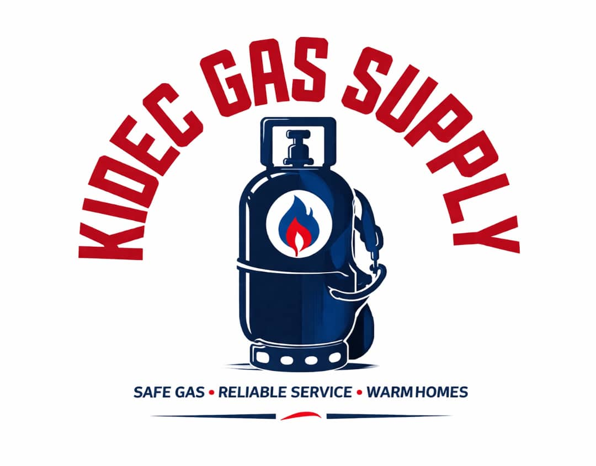
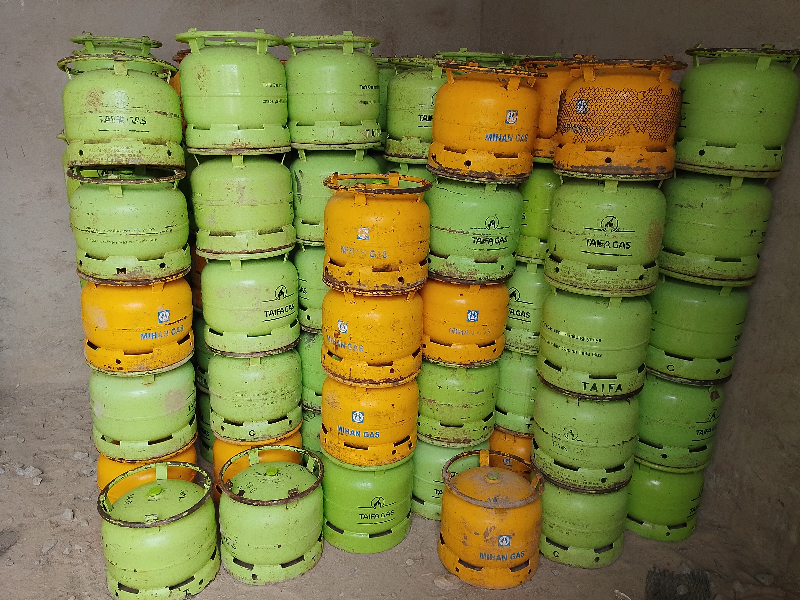
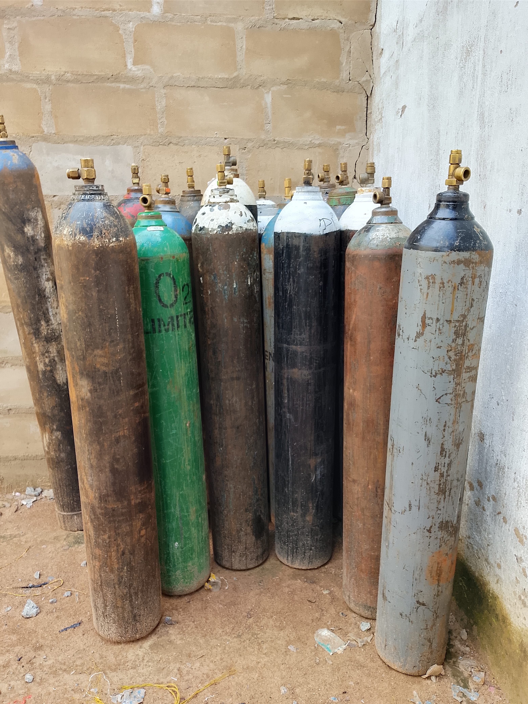
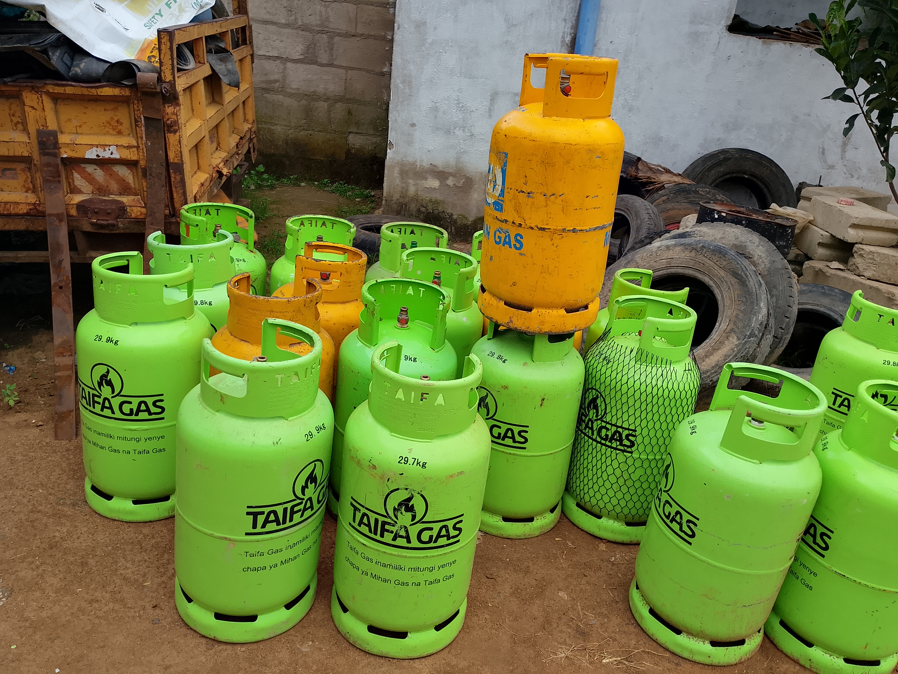
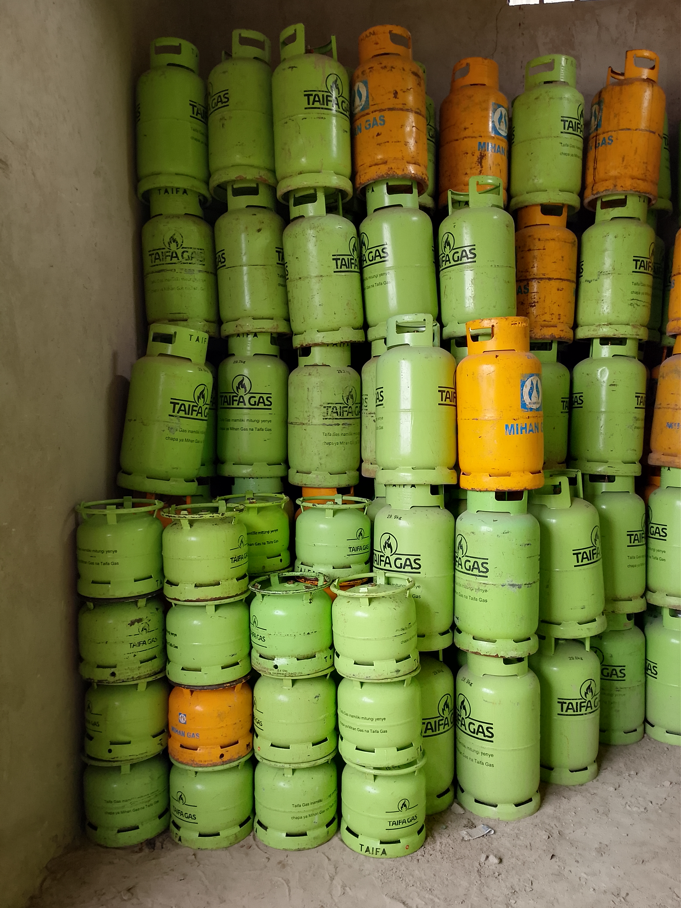
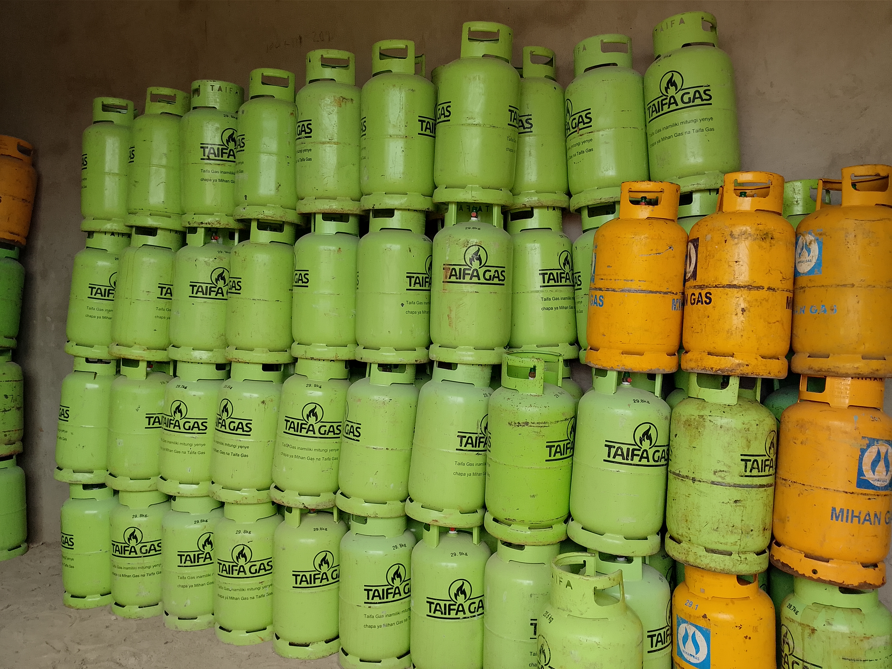
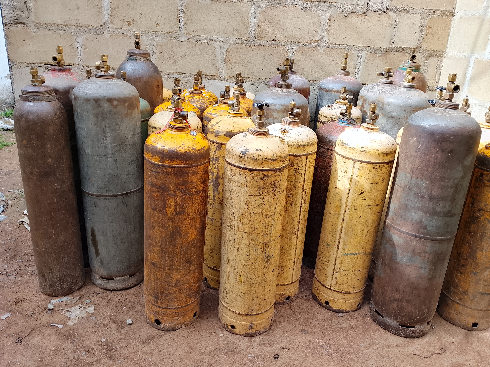

KIDEC GAS SUPPLY (KGS)
Your trusted LPG partner in Sengerema and Mwanza Region. Fast delivery, safe cylinders, and reliable service for homes and businesses.
Get your LPG cylinders delivered today. Call or WhatsApp us for immediate service - we're ready to serve you 24/7.

Premium quality LPG cylinders for cooking and heating. Available in various sizes to meet your household or business needs.
Same-day delivery across Sengerema and Mwanza Region. Our fleet ensures your gas arrives when you need it most.
Professional cylinder inspection and refilling at our certified facility. Quick turnaround with safety guaranteed.
Bulk supply contracts for restaurants, hotels, and institutions. Competitive pricing with priority delivery service.
Free safety consultations and proper usage guidance. We help you handle gas safely in your home or business.





KIDEC Gas Supply is a trusted provider of LPG gas solutions, serving households and businesses with reliable and efficient energy services.
Based in Sengerema, Mwanza Region, Tanzania, we are committed to delivering safe, affordable, and timely gas supply while maintaining the highest standards of customer service and professionalism.
At KIDEC Gas Supply, safety is our top priority in all LPG handling, transportation, and delivery operations.
KIDEC Gas Supply is fully registered and operates under Tanzanian laws and standards, complying with:
KGS is committed to delivering safe, reliable, and high-quality LPG services while protecting customers, staff, and the environment.
KIDEC Gas Supply operates in a rapidly growing LPG market in Tanzania, where clean energy demand is surging due to urbanization, rural expansion, and government initiatives promoting sustainable energy solutions. The LPG sector is expanding as more households and businesses transition from traditional fuels like charcoal and firewood to safer, more efficient cooking options.
We are committed to fostering strong strategic partnerships with suppliers, retailers, wholesalers, and institutions to ensure a reliable supply chain and widespread distribution. Our collaborations enhance market reach, improve service quality, and support economic development in the Mwanza Region and beyond.
To become a leading and most trusted gas supply company in Tanzania, known for safety, reliability, and excellent customer service.
To provide high-quality LPG gas solutions that are safe, affordable, and accessible to households and businesses while maintaining excellent service standards.
At KIDEC Gas Supply, we're committed to making LPG and related products accessible, safe, and affordable across Sengerema District and the wider Mwanza Region. We support both urban and rural customers through our reliable delivery services, ensuring everyone has access to clean and dependable energy.
Convenient LPG delivery for daily cooking. Multiple cylinder sizes available. Perfect for busy families who value safety and reliability.
Consistent gas supply for street food vendors, small restaurants, and local shops. Keep your business running without fuel interruptions.
Reliable bulk supply for commercial kitchens. Priority delivery service ensures your guests always enjoy hot meals.
Become our authorized dealer. Competitive wholesale pricing and reliable supply chain for growing your business.
Educational facilities, healthcare centers, and government offices. Safe, affordable energy solutions with dedicated support.
Bringing clean cooking energy to remote areas. We deliver to hard-to-reach locations across Sengerema and Mwanza Region.
+255 625 237 643
+255 754 814 445
deuskiyela97@gmail.com
Sengerema District, Ibisabageni Street, Mwanza Region, Tanzania